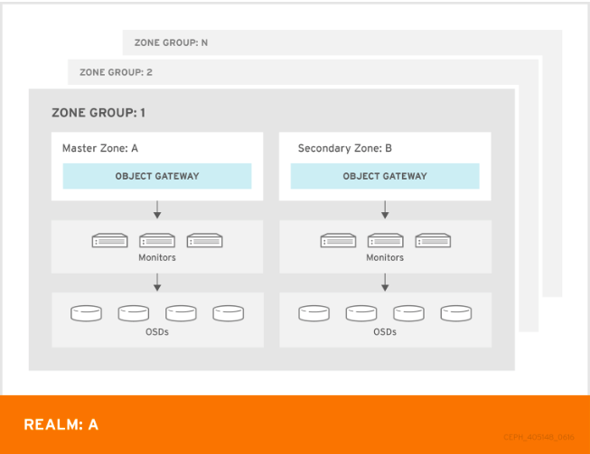
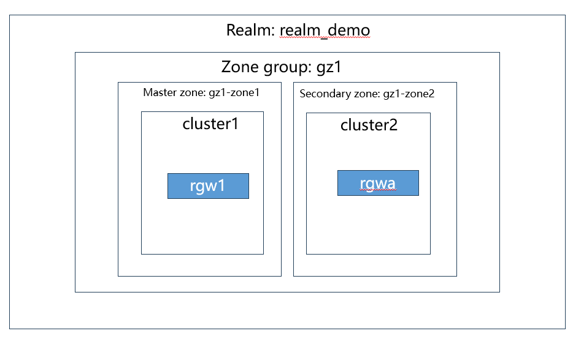
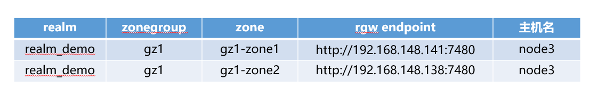

什么是异地多活?
- 异地多活指分布在异地的多个站点同时对外提供服务的业务场景。
ceph 对象存储 多站点服务
ceph multisite 的结构
- zone:
- zone定义了由一个或多个ceph对象网关实例组成的逻辑组.每个zone由自身的ceph集群支撑，在一个zonegroup中，多zone可以提供容灾能力。
- zonegroup：
- zonegroup包含一个或多个zone，必须指定一个zone 为master zone。rgw 多活方式是在同一zonegroup的多个zone之间进行的，即同一zonegroup中多个zone之间的数据完全一致，用户可以通过任意zone读写用一份数据。但是，对元数据的操作，比如创建桶，创建用户，仍然只能在master zone上进行。对数据的操作，比如创建桶中的对象，访问对象等，可以在任意zone中处理。slave zone可以接受bucket和user操作请求，然后将请求重定向到master zone,如果master zonr出现故障，slave zone将会被提升为master zone
- realm:
- realm代表了全局唯一的命名空间，这个命名空间由一个或多个zonegroup组成, 必须指定一个 zonegroup 为 master zonegroup
整体结构如下

- master zone 和 secondly zone 有两种模式：active-active 和 active-passive。active-active 模式下master和slave 都可以读写，数据会自动同步， active-passive 下，只能在master 写入。
- 同一个域下多 Zone之间的数据为多主模式，可以同时写；元数据为主从模式，由主Zone写入并同步到从Zone，保证元数据一致性。
ceph 双活站点架构图
- 在本文的环境中，我们将在两个Ceph 集群上搭建1个relam ，1个 zonegroup, 2个zone（master slave）的双活架构。
- 双活架构为：

在两个Ceph 集群上配置对象网关
在两个集群上，都要操作一次
- 登录集群cluster1的节点（以192.168.148.141为例）
- 创建rgw服务证书
1
2
3
4
5
6> sudo ceph-authtool \
--create-keyring /etc/ceph/ceph.client.radosgw.<your_rgw_name>.keyring \
-n client.radosgw.<your_rgw_name> \
--cap osd 'allow rwx' \
--cap mon 'allow rwx' \
--gen-key
- 说明：rgw属于client类型服务，为了清晰表明是rgw client服务，rgw服务证书名称部分通常又包含两段，例如
client.radosgw.node1或者client.rgw.node1，<your_rgw_name>即是最后一段。
- 创建rgw服务证书
- 更改rgw 证书文件所属为ceph 集群
1
sudo chown ceph:ceph /etc/ceph/ceph.client.radosgw.<your_rgw_name>.keyring
- 更改rgw 证书文件所属为ceph 集群
- 添加rgw证书到ceph 集群证书管理
1
sudo ceph auth add client.radosgw.<your_rgw_name> -i /etc/ceph/ceph.client.radosgw.<your_rgw_name>.keyring
- 添加rgw证书到ceph 集群证书管理
- 编辑集群配置文件
- 将rgw配置部分添加到ceph集群配置文件
/etc/ceph/ceph.conf中，添加内容如下：1
2
3
4
5
6
7
8
9
10
11
12
13[client.radosgw.<your_rgw_name>]
host=node1
keyring=/etc/ceph/ceph.client.radosgw.<your_rgw_name>.keyring
log file=/var/log/radosgw/client.radosgw.<your_rgw_name>.log
rgw frontends = "beast endpoint=<radosgw_node_ip>:<radowgw_service_port>"
/* 例如
[client.radosgw.rgw1]
host=node3
keyring=/etc/ceph/ceph.client.radosgw.rgw1.keyring
log file=/var/log/radosgw/client.radosgw.rgw1.log
rgw frontends = beast endpoint=192.168.148.141:7480
*/ - 参数说明：
- rgw_frontends：配置 HTTP 前端。
beast endpoint=address[:port] 格式设置监听地址- 用来提供HTTP服务请求的监听，并根据请求的相关信息，封装参数、转换请求
- rgw_frontends：配置 HTTP 前端。
- 创建日志目录
1
sudo mkdir /var/log/radosgw
- 创建日志目录
- 使配置文件生效
1
2
3sudo ceph config assimilate-conf -i /etc/ceph/ceph.conf
#查看配置dump信息
sudo ceph config dump
- 使配置文件生效
- 启动rgw服务
注意，rgw服务有一些必要的pool，若集群中没有，则可以在启动rgw服务前先行创建，也可以让rgw在启动时自行创建(按默认值创建，如pg_num)，本例采用自行创建pool的方式：
关闭自动pool自动伸缩模式，因为该模式下默认新建pool的pg_num=1,小于默认pgp_num
sudo ceph config set mon osd_pool_default_pg_autoscale_mode off启动服务
1
sudo systemctl start ceph-radosgw@radosgw.<your_rgw_name>.service
开启开机启动
1
sudo systemctl enable ceph-radosgw@radosgw.<your_rgw_name>.service
等待几秒，因为启动服务需要一些时间，然后检查服务启动状态
1
sudo systemctl status ceph-radosgw@radosgw.rgw1.service
若rgw服务启动失败，可能是自动创建pool失败了，可能的原因是osd资源紧张，pg数量超出阈值，系统不允许创建更多pool，解决办法可以是：增加更多的osd、删除不用的pool、调高osd的pg数量阈值：
1
2
3
4
5
6
7# 查看当前阈值
sudo ceph config get mon mon_max_pg_per_osd
# 设置新的阈值
sudo ceph config set mon mon_max_pg_per_osd <num>
// 例如 sudo ceph config set mon mon_max_pg_per_osd 2048
# 立即生效
sudo systemctl restart ceph.target
在master zone集群
- 整个集群的架构

在master zone 集群中创建realm, zonegroup和master zone
- 创建realm
1
2
3
4
5
6
7
8[root@node3 ~]# radosgw-admin realm create --rgw-realm=realm_demo --default
{
"id": "2d40b603-356c-4730-a5f8-336260e3ed4c",
"name": "realm_demo",
"current_period": "aecbda84-ee4f-4ffe-b1aa-efabb9d342c3",
"epoch": 2
}
# Ceph 为 realm 生成唯一 ID，允许在需要时重命名域。需要设置为 default
如果指定了 –default，radosgw-admin 将默认使用此域。如果没有指定 –default，添加 zone-groups 和区域需要指定 –rgw-realm 标志或 –realm -id 标志，以便在添加 zone group 和 zone 时标识域。
- 创建realm
- 创建master zonegroup
1
2
3
4
5
6
7
8
9
10
11
12
13
14
15
16
17
18
19
20
21
22
23[root@node3 ~]# radosgw-admin zonegroup create --rgw-zonegroup=gz1 --endpoints=http://192.168.148.141:7480 --rgw-realm=realm_demo --master --default
{
"id": "3f4b9246-be0d-4e4e-913a-9edf77d96f8d",
"name": "gz1",
"api_name": "gz1",
"is_master": "true",
"endpoints": [
"http://192.168.148.141:7480"
],
"hostnames": [],
"hostnames_s3website": [],
"master_zone": "71e02920-7412-44ea-adba-5426c9058397",
"zones": [],
"placement_targets": [
{
"name": "default-placement",
"tags": []
}
],
"default_placement": "default-placement",
"realm_id": "2d40b603-356c-4730-a5f8-336260e3ed4c"
}需要设置为default，master, 并指定realm
- 创建master zonegroup
- 创建master zone
1
[root@node3 ~]# radosgw-admin zone create --rgw-zonegroup=gz1 --rgw-zone=gz1-zone1 --master --default --endpoints=http://192.168.148.141:7480
必须在位于 区域内的 Ceph 对象网关节点上创建区域。
- 创建master zone
- 删除默认的Default zone Group 和 zone
- 删除 default区域（如果存在）。 确保将其首先从默认区域组中移除。
1
2
3
4
5
6# radosgw-admin zonegroup remove --rgw-zonegroup=default --rgw-zone=default
# radosgw-admin period update --commit
# radosgw-admin zone rm --rgw-zone=default
# radosgw-admin period update --commit
# radosgw-admin zonegroup delete --rgw-zonegroup=default
# radosgw-admin period update --commit - 删除 Ceph 存储集群中 default 区域的池，如果它们存在。
- 重要：如果已经在使用它来存储数据，可以不删除这个default区域组。
1
2
3
4
5# ceph osd pool delete default.rgw.control default.rgw.control --yes-i-really-really-mean-it
# ceph osd pool delete default.rgw.data.root default.rgw.data.root --yes-i-really-really-mean-it
# ceph osd pool delete default.rgw.gc default.rgw.gc --yes-i-really-really-mean-it
# ceph osd pool delete default.rgw.log default.rgw.log --yes-i-really-really-mean-it
# ceph osd pool delete default.rgw.users.uid default.rgw.users.uid --yes-i-really-really-mean-it删除可能失败
- 重要：如果已经在使用它来存储数据，可以不删除这个default区域组。
报错1：ceph you must unset nodelete flag for the pool first
解决：
ceph osd pool set [pool-name] nodelete 0
报错2：you must first set the mon_allow_pool_delete config option to true before you can destroy a pool
解决：
ceph config set mon mon_allow_pool_delete true
- 创建同步使用的system用户
1
[root@node3 ~]# radosgw-admin user create --uid="sync-admin" --display-name="sync-admin" --system
- 查看用户
1
sudo radosgw-admin user list
- 查看sync-admin 用户的具体信息，记录
access_key和secret_key的值.1
sudo radosgw-admin user info --uid=sync-admin
- 将系统用户添加到master 区域
1
2
3[root@node3 ~]# radosgw-admin zone modify --rgw-zone=gz1-zone1 --access-key=9T48IMD6PDUXCYAB30VL --secret=nR2TaFsZfnRF0ltcvZv7TkaxLE6x07hbuF7KoBa3
[root@node3 ~]# # radosgw-admin period update --commit
- 创建同步使用的system用户
- 更新ceph.conf rgw1的配置
1
2// 在/etc/ceph/ceph.conf文件中[client.radosgw.rgw1]下面添加
rgw_zone = gz1-zone1
- 更新ceph.conf rgw1的配置
- 重启网关
1
sudo systemctl restart ceph-radosgw@rgw.`hostname -s`
- 重启网关
在second zone集群上
zone group 中的区域复制所有数据，以确保每个 zone 有相同的数据。
- 从master zone 拉取realm 配置
1
2[root@df-vm-05 ~]# radosgw-admin realm pull --url=http://192.168.148.141:7480 --access-key=DEMZT6Y26CCAIU9GMVWQ --secret=EkillNdrDiCWcbff7qUKMm0LH1TWJ9NrNCZcAzOB --rgw-realm=realm_demo
# 这里的access 跟 secret 就是同步用户的key
- 如果此 realm 是默认域或唯一的域，请将 realm 设为默认域。
1
# radosgw-admin realm default --rgw-realm=realm_demo
- 从master zone 拉取realm 配置
- 拉取Period
- 使用 master zone group 中 master zone 的 URL 路径、access key 和 secret，将 period 拉取到主机。
- Period 可以理解为realm的版本，带有多个epoch的时间“period”，用于跟踪配置更改
1
[root@df-vm-05 ~]# radosgw-admin period pull --url=http://192.168.148.141:7480 --access-key=DEMZT6Y26CCAIU9GMVWQ --secret=EkillNdrDiCWcbff7qUKMm0LH1TWJ9NrNCZcAzOB --rgw-realm=realm_demo
- 创建secondly zone
- 必须在位于区域内的 Ceph 对象网关节点上创建区域。
1
2[root@df-vm-05 ~]# radosgw-admin zone create --rgw-zonegroup=gz1 --rgw-zone=gz1-zone2 --access-key=DEMZT6Y26CCAIU9GMVWQ --secret=EkillNdrDiCWcbff7qUKMm0LH1TWJ9NrNCZcAzOB --endpoints=http://192.168.148.138:7480
# 这里的access 跟 secret 就是同步用户的key
- 删除默认区域 （同master的步骤）
- 更新 Period
1
radosgw-admin period update --commit
- 更新 Period
- 更新 Ceph 配置文件
1
2// 在/etc/ceph/ceph.conf文件中[client.radosgw.rgwa]下面添加
rgw_zone = gz1-zone2
- 更新 Ceph 配置文件
- 重启网关
1
sudo systemctl restart ceph-radosgw@rgw.`hostname -s`
- 重启网关
查看配置
- zonegroup的配置
1
2
3
4
5
6
7
8
9
10
11
12
13
14
15
16
17
18
19
20
21
22
23
24
25
26
27
28
29
30
31
32
33
34
35
36
37
38
39
40
41
42
43
44
45
46
47
48
49
50
51
52
53
54
55
56
57
58
59
60[root@node3 ceph]# radosgw-admin zonegroup get --rgw-zonegroup=gz1
{
"id": "f162c7f2-2ada-4b97-a86a-14be960805be",
"name": "gz1",
"api_name": "gz1",
"is_master": "true",
"endpoints": [
"http://192.168.148.141:7480"
],
"hostnames": [],
"hostnames_s3website": [],
"master_zone": "cd58b17f-3021-46b5-9f1d-a3e284e26f1e",
"zones": [
{
"id": "cd58b17f-3021-46b5-9f1d-a3e284e26f1e",
"name": "gz1-zone1",
"endpoints": [
"http://192.168.148.141:7480"
],
"log_meta": "false",
"log_data": "true",
"bucket_index_max_shards": 11,
"read_only": "false",
"tier_type": "",
"sync_from_all": "true",
"sync_from": [],
"redirect_zone": ""
},
{
"id": "f0fe3987-d8cb-48bb-aa1d-87c76e26aac6",
"name": "gz1-zone2",
"endpoints": [
"http://192.168.148.138:7480"
],
"log_meta": "false",
"log_data": "true",
"bucket_index_max_shards": 11,
"read_only": "false",
"tier_type": "",
"sync_from_all": "true",
"sync_from": [],
"redirect_zone": ""
}
],
"placement_targets": [
{
"name": "default-placement",
"tags": [],
"storage_classes": [
"STANDARD"
]
}
],
"default_placement": "default-placement",
"realm_id": "fb3fa097-eda4-4432-a1b2-e0951582112c",
"sync_policy": {
"groups": []
}
}
# 可以看到zone2 的信息会同步到master zone1
- zonegroup的配置
- 查看sync的状态
1
2
3
4
5
6
7
8
9
10
11
12
13
14
15
16
17
18
19
20
21
22
23
24
25
26# master zone的状态
[root@node3 ceph]# radosgw-admin sync status
realm fb3fa097-eda4-4432-a1b2-e0951582112c (realm_demo)
zonegroup f162c7f2-2ada-4b97-a86a-14be960805be (gz1)
zone cd58b17f-3021-46b5-9f1d-a3e284e26f1e (gz1-zone1)
metadata sync no sync (zone is master)
data sync source: f0fe3987-d8cb-48bb-aa1d-87c76e26aac6 (gz1-zone2)
syncing
full sync: 0/128 shards
incremental sync: 128/128 shards
data is caught up with source
# second zone的状态
[user@node3 ~]$ radosgw-admin sync status
realm fb3fa097-eda4-4432-a1b2-e0951582112c (realm_demo)
zonegroup f162c7f2-2ada-4b97-a86a-14be960805be (gz1)
zone f0fe3987-d8cb-48bb-aa1d-87c76e26aac6 (gz1-zone2)
metadata sync syncing
full sync: 0/64 shards
incremental sync: 64/64 shards
metadata is caught up with master
data sync source: cd58b17f-3021-46b5-9f1d-a3e284e26f1e (gz1-zone1)
syncing
full sync: 0/128 shards
incremental sync: 128/128 shards
data is caught up with sourcedata is caught up with source: 表示数据一致
- 查看sync的状态
创建bucket 错误
sudo ceph config set mon mon_max_pg_per_osd <num>(增大pg 上限数量)
转载请注明来源，欢迎对文章中的引用来源进行考证，欢迎指出任何有错误或不够清晰的表达。可以在下面评论区评论，也可以邮件至 1065016533@qq.com